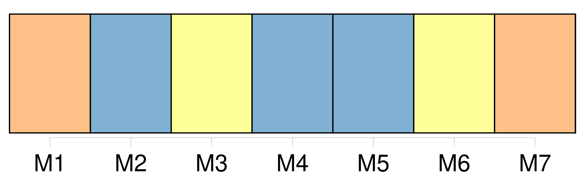
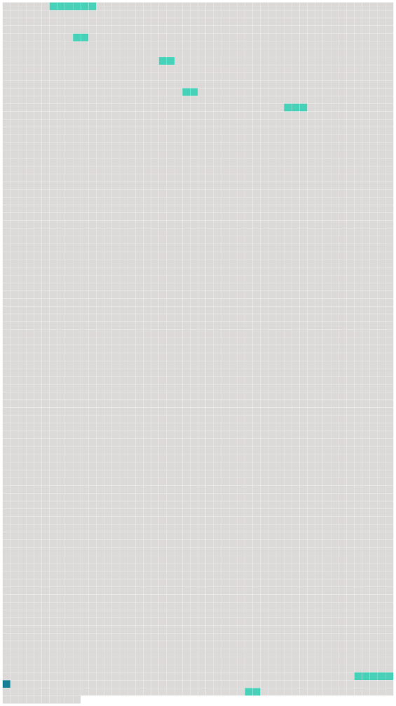

Longueur nb maillons : 8 mentions |
 |
De cette salle on pénétrait dans [une autre un peu moins grande] [7 phrases] Hamlet, prince de Danemark, s'il eût causé dans [cette chambre] , eût tiré son épée et piqué Polonius derrière la tapisserie en criant : Un rat!! [4 phrases] Un lit à colonnes en quenouille, fermé par des rideaux de brocatelle coupés à tous leurs plis et dont les ramages verts et blancs se confondaient dans une même teinte jaunâtre, occupait un coin de [la pièce] , et l'on n'eût osé en relever les pentes de peur d'y trouver dans l'ombre quelque larve accroupie ou quelque forme roide dessinant, sous la blancheur du drap, un nez pointu, des pommettes osseuses, des mains jointes et des pieds placés comme ceux des statues allongées sur des tombeaux ; tant les choses faites pour l'homme et d'où l'homme est absent prennent vite un air surnaturel!! [1 phrases]
Une table en bois noir avec les incrustations de cuivre qui se détachaient, un miroir trouble et louche, dont le tain avait coulé, las de ne pas refléter de figure humaine, un fauteuil de tapisserie au petit point, ouvrage de patience et de loisir mené à fin par quelque aïeule, mais qui ne laissait plus discerner que quelques fils d'argent parmi les soies et les laines déteintes, complétaient l'ameublement de [cette chambre] , à la rigueur habitable pour un homme qui n'eût craint ni les esprits ni les revenants. [3 phrases] En ouvrant la porte qui se trouvait au fond de [cette dernière chambre] , on tombait en pleines ténèbres, on abordait le vide, l'obscur et l'inconnu. [81 phrases] Arrivé à [la chambre à coucher fantastique] [que] nous avons décrite, le vieux serviteur alluma une petite lampe de cuivre à un bec dont la mèche se repliait dans l'huile comme un ténia dans l'esprit-de-vin à la montre d'un apothicaire, et se retira suivi de Miraut. [2 phrases] Si [la chambre] avait l'air d'une chambre à revenants pendant le jour, c'était encore bien pis le soir à la clarté douteuse de la lampe. |
 |
Il est possible de télécharger la ressource sur la page Ortolang |
Si vous avez des questions ou vous voyez des erreurs, merci d'envoyer un mail à silvia.federzoni89@gmail.com |